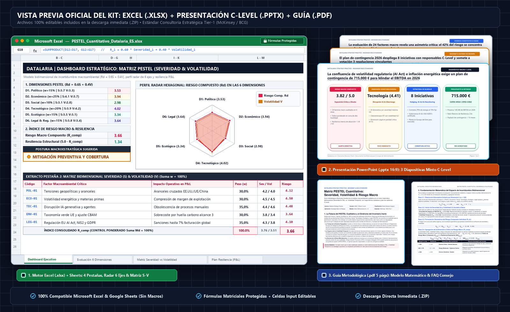

En casi cualquier sesión anual de planificación estratégica, reunión ordinaria de Consejo de Administración o comité de auditoría y riesgos se proyecta invariablemente una diapositiva con el acrónimo canónico PESTEL: seis columnas o cuadrantes agrupando factores Políticos, Económicos, Sociales, Tecnológicos, Ecológicos y Legales.
Sin embargo, en más del 85% de las corporaciones, este ejercicio sufre una degradación metodológica sistemática conocida en la consultoría de alta dirección como el “Síndrome del Inventario Inerte”:
- Equivalencia Tipográfica Engañosa: Una amenaza existencial como una sanción inminente de hasta 35 M€ por el Reglamento Europeo de Inteligencia Artificial (EU AI Act) comparte el mismo tamaño de letra, peso visual y viñeta que una actualización menor de licencias municipales de residuos. La mente humana tiende a percibir simetría donde existe una asimetría radical de impacto financiero.
- Ceguera ante la Volatilidad Temporal: Los riesgos macroeconómicos operan en regímenes temporales dispares. Una tendencia demográfica (inversión de la pirámide poblacional en Europa) es un fenómeno estructural, gradual y predecible a 10 años vista. En contraste, un pico del 40% en el precio mayorista del gas natural o la imposición repentina de aranceles aduaneros es un shock hipervolátil. Tratarlos con la misma herramienta estática invalida cualquier modelización de coberturas.
- Desconexión con el Balance y la Cuenta de Resultados (P&L): Finalizada la sesión estratégica, ningún Director Financiero (CFO) o Consejero Delegado (CEO) puede deducir qué dotación presupuestaria en capital (CAPEX) o gasto operativo (OPEX) debe consignarse en el presupuesto anual para inmunizar el margen EBITDA de la compañía frente a turbulencias externas.
Para convertir este análisis descriptivo en una herramienta prescriptiva de grado Consejo de Administración (C-Level), es imprescindible formalizar el marco macroambiental mediante un motor matemático bidimensional (Severidad del Impacto vs. Volatilidad Temporal), un perfil hexagonal en gráfico Radar, una matriz cartesiana de incertidumbre estratégica y un plan de contingencia ejecutiva bajo la Pirámide de Minto.
Identificación de factores sin priorización estocástica ni impacto en P&L"] B["2. Formalización Bidimensional: Vector (Severidad, Volatilidad)
Normalización unitaria (Σw = 1.00) y calificación continua en escala 1.0 a 5.0"] C["3. Motor Cuantitativo: Riesgo Compuesto (Ri) e Índice R_comp
Cálculo geométrico del riesgo: Ri = √(Si · Vi) y agregación macrosectorial"] D["4. Matriz de Incertidumbre: 4 Cuadrantes Estratégicos
Partición cartesiana: Críticos Volátiles, Estructurales, Alertas y Ruido"] E["5. Última Milla Ejecutiva: Boardroom Presentation (Minto Pyramid)
Radar hexagonal, cronograma Q1-Q4 y Gateway de Decisión del Consejo"] A --> B B --> C C --> D D --> E style A fill:#F8FAFC,stroke:#94A3B8,stroke-width:1.5px,color:#0F172A style B fill:#EFF6FF,stroke:#3B82F6,stroke-width:1.5px,color:#1E3A8A style C fill:#EEF2FF,stroke:#6366F1,stroke-width:1.5px,color:#312E81 style D fill:#ECFDF5,stroke:#10B981,stroke-width:1.5px,color:#064E3B style E fill:#0F172A,stroke:#D97706,stroke-width:2px,color:#FFFFFF
🔍 Haz clic en el diagrama para ampliarlo a pantalla completa
Executive Decision Pack: Matriz PESTEL Cuantitativa (Severidad & Volatilidad)
1. ¿Qué es un Análisis PESTEL? Fundamentos, Dimensiones Macro y Objetivos
Para cualquier directivo, inversor o consultor estratégico que deba evaluar la resiliencia de un plan de negocio a medio y largo plazo—o para quien se aproxime por primera vez a esta metodología—, el Análisis PESTEL constituye el sistema de radar primario para monitorizar el macroentorno empresarial. Formulado originalmente por el profesor de Harvard Francis J. Aguilar en su obra fundacional Scanning the Business Environment (1967) bajo las siglas ETPS (Economic, Technical, Political, Social), el modelo fue ampliado posteriormente por teóricos del management como Liam Fahey y V.K. Narayanan hasta consolidar el acrónimo contemporáneo PESTEL (Político, Económico, Social, Tecnológico, Ecológico y Legal).
A diferencia de las herramientas centradas en la rivalidad competitiva directa o en las capacidades operativas internas, el principio rector de PESTEL parte de una premisa empírica fundamental: ninguna organización ni cadena de valor sectorial opera en una campana de vacío; la viabilidad del margen operativo (EBITDA), el coste de financiación (WACC) y la propia licencia para operar están condicionados por fuerzas macroeconómicas, regulatorias y tecnológicas exógenas que la empresa no puede controlar directamente, pero sí anticipar, cuantificar y cubrir financieramente.
La Anatomía del Modelo: Las 6 Dimensiones Macroambientales Representadas
El marco PESTEL estructura el entorno global en dos grandes bloques sistémicos que agrupan los seis vectores macroambientales capaces de alterar la estructura de ingresos y costes de una corporación:
- Bloque Institucional, Regulatorio y Financiero (Fuerzas de Gobernanza y Capital): Evalúa el marco de soberanía estatal, las condiciones monetarias y el ordenamiento jurídico vinculante:
- Factores Políticos (P): Estabilidad gubernamental, política comercial e imposición de aranceles aduaneros, subvenciones industriales, fiscalidad corporativa y fricciones geopolíticas en rutas de suministro.
- Factores Económicos (E): Ciclo del PIB, inflación de materias primas y costes energéticos, curvas de tipos de interés de los bancos centrales, tipos de cambio de divisas y disponibilidad de crédito bancario.
- Factores Legales y Regulatorios (L): Normativas de cumplimiento obligatorio con régimen sancionador directo (como el EU AI Act en inteligencia artificial, el RGPD en privacidad de datos, leyes antimonopolio, derecho laboral y propiedad intelectual).
- Bloque Socio-Estructural, Tecnológico y Climático (Fuerzas de Transformación Secular): Mide las mutaciones profundas en el mercado de trabajo, la frontera de innovación técnica y la sostenibilidad física de las operaciones:
- Factores Sociales y Demográficos (S): Envejecimiento poblacional, escasez de talento técnico especializado (STEM), cambios en los hábitos de consumo, movilidad laboral y exigencias éticas del consumidor.
- Factores Tecnológicos (T): Disrupción por Inteligencia Artificial Generativa y automatización industrial, exposición a ciberataques en infraestructuras críticas (OT/IT), velocidad de obsolescencia del hardware/software e incentivos de I+D+i.
- Factores Ecológicos y Ambientales (E): Transición energética, precio de los derechos de emisión de $\text{CO}_2$, directivas obligatorias de reporte de sostenibilidad (como la directiva europea CSRD Alcances 1, 2 y 3), estrés hídrico y fenómenos climáticos extremos.
| Bloque Sistémico | Dimensión PESTEL | Mecánica Económica e Impacto en P&L / Balance | Variables Críticas y Subfactores Auditables | Ejemplos Corporativos Reales |
|---|---|---|---|---|
| Institucional & Financiero (Soberanía y Comercio) |
1. Político (POL) | Altera el acceso a mercados internacionales y el coste de importación/exportación mediante barreras arancelarias o subsidios estatales asimétricos. | • Aranceles bilaterales y cuotas de importación. • Riesgo país y estabilidad ejecutiva. • Subvenciones públicas (PERTE, IRA, NextGen). • Sanciones geopolíticas a cadenas de suministro. |
• Fabricantes europeos de maquinaria afectados por aranceles aduaneros del 15% en EE.UU. • Relocalización (nearshoring) de plantas electrónicas por tensiones en el Mar Rojo y Asia. |
| Institucional & Financiero (Mercados y Costes) |
2. Económico (ECO) | Comprime directamente el margen bruto por inflación de insumos y encarece el servicio de la deuda corporativa al subir los tipos de interés. | • Volatilidad mayorista de electricidad y gas. • Tipos de interés de referencia (BCE / Fed). • Inflación salarial en convenios colectivos. • Fluctuación de divisas de exportación (EUR/USD). |
• Industria electrointensiva sufriendo picos del +35% en el precio invernal del MWh. • Empresas apalancadas refinanciando deuda sindicada con incrementos de 250 pb en su WACC. |
| Socio-Estructural (Demografía y Talento) |
3. Social (SOC) | Limita la capacidad de crecimiento orgánico por cuellos de botella en contratación cualificada y desplaza la demanda hacia nuevas categorías. | • Déficit de ingenieros y técnicos especialistas. • Tasa de rotación voluntaria y absentismo. • Envejecimiento de la fuerza laboral industrial. • Cambios en patrones de gasto del consumidor. |
• Empresas de ingeniería e IT incapaces de ejecutar proyectos en cartera por falta de perfiles mecatrónicos. • Caída estructural de demanda en categorías tradicionales ante cambios generacionales. |
| Socio-Estructural (Frontera de Innovación) |
4. Tecnológico (TEC) | Provoca la obsolescencia acelerada de productos actuales o reduce drásticamente los costes marginales de los competidores nativos digitales. | • Adopción de IA Generativa y agentes autónomos. • Riesgo de ransomware en redes industriales (OT). • Deuda técnica en sistemas ERP/Cloud. • Automatización robótica de procesos. |
• Competidores que integran agentes LLM reduciendo un 28% su coste unitario de soporte y diseño. • Parada de planta de 10 días por ciberataque a sistemas de control SCADA. |
| Socio-Estructural (Transición Climática) |
5. Ecológico (ENV) | Exige inversiones de capital (CAPEX) en descarbonización y condiciona la homologación como proveedor de grandes corporaciones y el acceso a banca verde. | • Auditoría obligatoria de huella de carbono (CSRD). • Coste de derechos de emisión (EU ETS). • Restricciones de consumo hídrico e industrial. • Exigencias de economía circular en envases. |
• Proveedores industriales excluidos de licitaciones europeas por carecer de métrica auditada de Alcance 3. • Sobrecostes por sustitución obligatoria de materiales plásticos de un solo uso. |
| Institucional & Financiero (Seguridad Jurídica) |
6. Legal (LEG) | Genera contingencias en balance, provisiones por litigios y riesgo de pérdida de licencia operativa o multas calculadas sobre la facturación global. | • Reglamento Europeo de IA (EU AI Act). • Protección de datos (RGPD) y soberanía cloud. • Normativa de seguridad industrial y laboral. • Responsabilidad civil de producto y patentes. |
• Sanciones de hasta 35 M€ (o el 7% de la facturación mundial) por sistemas de IA de alto riesgo no certificados. • Litigios transfronterizos por incumplimiento de normativas de cumplimiento normativo (compliance). |
Cómo Funciona: El Embudo de Diagnóstico Estratégico (PESTEL → Porter → DAFO-CAME)
Para los lectores que llegan a esta guía como su primer contacto con nuestras herramientas cuantitativas de dirección, es fundamental comprender cómo funciona el análisis PESTEL dentro del flujo completo de planificación estratégica corporativa. En la práctica de las consultoras Tier-1 (McKinsey, BCG, Bain), el diagnóstico estratégico nunca utiliza herramientas aisladas, sino un embudo secuencial de tres niveles donde la salida de un modelo alimenta matemáticamente la entrada del siguiente:
- Nivel 1 — Escaneo del Macroentorno Exógeno (Matriz PESTEL Cuantitativa): Es el punto de partida obligatorio (el radar de gran alcance). Identifica y cuantifica la severidad en P&L y la volatilidad temporal de las megatendencias políticas, económicas, sociales, tecnológicas, ecológicas y legales que impactan sobre la economía en su conjunto.
- Nivel 2 — Análisis Estructural del Sector (5 Fuerzas de Porter Ponderadas y Atractivo de Industria): Una vez identificados los shocks macroambientales en el PESTEL, el directivo baja al terreno de su industria específica. Por ejemplo, una nueva regulación legal o un salto tecnológico detectado en el PESTEL altera directamente las Barreras de Entrada (F4) o acelera la Amenaza de Productos Sustitutos (F5) en el modelo de Porter. Si aún no has revisado cómo cuantificar el poder de negociación de clientes y proveedores, el atractivo estructural del sector ($\text{ROIC} - \text{WACC}$) y el foso defensivo (Economic Moat), te recomendamos consultar nuestra guía sobre las 5 Fuerzas de Porter Ponderadas y Atractivo de Industria.
- Nivel 3 — Diagnóstico Situacional y Ejecución Presupuestaria (DAFO Cuantitativo y Matriz CAME): Finalmente, los factores críticos externos filtrados tanto en el PESTEL (macroentorno) como en las 5 Fuerzas de Porter (microentorno sectorial) se consolidan directamente como las Oportunidades y Amenazas (Matriz EFE) dentro del análisis DAFO. Allí se cruzan matemáticamente con las Fortalezas y Debilidades internas (Matriz EFI) de la propia empresa para definir el vector estratégico y desplegar las acciones correctivas y de explotación en la Matriz CAME. Puedes profundizar en este cierre operativo en nuestra guía dedicada al DAFO Cuantitativo y Matriz CAME.
¿Cuál es el Objetivo Principal de un Análisis PESTEL?
El propósito último de un análisis PESTEL riguroso no es redactar un ensayo macroeconómico generalista, sino proteger la cuenta de resultados (EBITDA) y el flujo de caja libre anticipando discontinuidades externas antes de que impacten en la tesorería. En un Consejo de Administración, la herramienta debe responder con exactitud a tres preguntas de gobierno corporativo:
- ¿Qué fuerzas exógenas del entorno global tienen capacidad real para destruir más de un 5%–15% de nuestro EBITDA presupuestado en los próximos 12 a 36 meses?
- De esas fuerzas de alto impacto, ¿cuáles son shocks hipervolátiles que exigen coberturas financieras inmediatas (hedging de energía, tipos o divisas) y cuáles son tendencias estructurales lentas que requieren inversión plurianual en CAPEX y adaptación tecnológica?
- ¿Qué dotación presupuestaria de contingencia debe reservar hoy el Comité de Dirección para inmunizar la solvencia y los compromisos bancarios (covenants) frente a un escenario macro adverso?
Resultados Esperados: ¿Qué debe arrojar un Análisis PESTEL Eficaz?
Cuando el análisis PESTEL se ejecuta bajo el estándar cuantitativo que desarrollamos en esta guía, el comité ejecutivo obtiene tres entregables tangibles y auditables:
- Índice de Riesgo Macro Compuesto ($R_{\text{comp}}$) y Perfil Radar Hexagonal: Una métrica escalar normalizada (de 1.00 a 5.00) que sintetiza el nivel de hostilidad del entorno y su inverso de Resiliencia Macro ($RES_{\text{macro}}$), acompañada de una geometría hexagonal que muestra de un vistazo qué pilares concentran la vulnerabilidad corporativa.
- Matriz Cartesiana Bidimensional (Severidad vs. Volatilidad): Una segmentación automática de los factores en cuatro cuadrantes de decisión (Riesgos Críticos Volátiles, Riesgos Estructurales Predecibles, Alertas Tempranas y Ruido Operativo), eliminando la ambigüedad sobre dónde concentrar la atención del Consejo y qué delegar a mandos intermedios.
- Plan de Resiliencia y Contingencia C-Level (Input directo para Porter y DAFO-CAME): Un programa de blindaje con iniciativas concretas, asignación de presupuesto CAPEX/OPEX, responsables estatutarios (C-Suite Owners), calendario trimestral Q1-Q4 y cuantificación del EBITDA preservado, sirviendo además como base empírica auditada para alimentar las matrices de las 5 Fuerzas de Porter y del DAFO-CAME.
2. La Falacia del PESTEL Cualitativo y el Síndrome del Inventario Inerte
Aunque el marco conceptual introducido por Francis J. Aguilar (1967) y expandido hacia la formulación PESTEL constituye una pieza indispensable del análisis estratégico, su aplicación tradicional mediante listas de texto estáticas en presentaciones corporativas adolece de tres vicios estructurales:
2.1. La Paradoja de la Simetría Ilusoria
Cuando un equipo asesor recopila 25 viñetas repartidas equitativamente entre las seis dimensiones sin ponderación matemática, se produce una severa distorsión cognitiva. Si en la dimensión Ecológica se apunta “nuevas directivas europeas de huella de carbono CSRD” y en la dimensión Social se anota “creciente preferencia de la Generación Z por marcas con propósito”, el comité suele debatir ambas cuestiones con idéntico consumo de tiempo. En la realidad financiera, la primera puede implicar auditorías legales obligatorias y riesgo de exclusión bancaria, mientras que la segunda es un vector de marketing de influencia difusa a medio plazo.
2.2. La Ausencia de Elasticidades y Dinámica de Shocks
Las fuerzas macroeconómicas no ejercen su presión de manera uniforme sobre los flujos de caja. En industrias manufactureras e intensivas en energía, la dimensión Económica domina la variabilidad del margen bruto. En empresas tecnológicas y de software empresarial, las dimensiones Tecnológica y Legal concentran el 80% del riesgo de disrupción operativa y de litigio. Un modelo riguroso de consultoría Tier-1 (McKinsey / BCG) exige permitir la asignación asimétrica de ponderaciones macrosectoriales ($W_d$), reflejando la estructura de costes y la exposición específica del modelo de negocio.
2.3. La Brecha de la “Última Milla Ejecutiva”
Un informe estratégico que finaliza con la afirmación de que “el entorno macro presenta incertidumbre regulatoria y riesgos geopolíticos a vigilar” no proporciona ninguna guía de acción para un Consejo de Administración. La estrategia corporativa de alto rendimiento exige responder con precisión a tres interrogantes ineludibles:
- ¿Cuál es el valor económico en riesgo ($\text{EBITDA at Risk}$) si confluyen los peores shocks macro simultáneamente?
- ¿Qué porcentaje del riesgo se puede mitigar mediante coberturas financieras y contratos operativos antes de Q3?
- ¿Qué presupuesto de contingencia en CAPEX y OPEX debe autorizar formalmente el Consejo en esta sesión para blindar la continuidad del negocio?
3. Fundamentación Matemática: El Espacio Métrico Bidimensional de Incertidumbre
Para transformar el escaneo del entorno en un motor cuantitativo auditable, definimos cada factor macroambiental como un vector bidimensional $(\vec{S}, \vec{V})$ proyectado sobre el espacio continuo $[1.00, 5.00]^2$, sujeto a normalización estocástica unitaria.
Aranceles, estabilidad y subvenciones"] D2["2. Económico (ECO)
Costes energéticos, tipos e inflación"] D3["3. Social (SOC)
Demografía, talento técnico y cultura"] D4["4. Tecnológico (TEC)
IA Generativa, ciberseguridad y deuda IT"] D5["5. Ecológico (ENV)
Directiva CSRD, clima y circularidad"] D6["6. Legal (LEG)
EU AI Act, RGPD y derecho laboral"] end ENGINE["MOTOR CUANTITATIVO DATALARIA
Evaluación dual: Severidad en EBITDA (S) vs. Volatilidad Temporal (V)"] D1 --> ENGINE D2 --> ENGINE D3 --> ENGINE D4 --> ENGINE D5 --> ENGINE D6 --> ENGINE style ENGINE fill:#0F172A,stroke:#2563EB,stroke-width:2.5px,color:#FFFFFF style D1 fill:#FFF1F2,stroke:#F43F5E,stroke-width:1.5px,color:#9F1239 style D2 fill:#FFFBEB,stroke:#F59E0B,stroke-width:1.5px,color:#92400E style D3 fill:#F0FDF4,stroke:#22C55E,stroke-width:1.5px,color:#166534 style D4 fill:#F5F3FF,stroke:#8B5CF6,stroke-width:1.5px,color:#5B21B6 style D5 fill:#F0FDFA,stroke:#14B8A6,stroke-width:1.5px,color:#0F766E style D6 fill:#EEF2FF,stroke:#6366F1,stroke-width:1.5px,color:#3730A3
🔍 Haz clic en el diagrama para ampliarlo a pantalla completa
Paso 1: Restricción Estocástica Unitaria por Dimensión ($w_{d,i}$)
Cada dimensión macro $d \in \{\text{Político}, \text{Económico}, \text{Social}, \text{Tecnológico}, \text{Ecológico}, \text{Legal}\}$ se descompone en un conjunto de $n_d$ factores objetivos auditables ($n_d \in [4, 5]$):
$$\mathcal{D}_d = \{f_{d,1}, f_{d,2}, \dots, f_{d,n_d}\}$$A cada factor individual se le asigna un peso de importancia relativa interna $w_{d,i} \in [0, 1]$. Para garantizar la neutralidad matemática y evitar distorsiones por proliferación artificial de viñetas, se impone la restricción estocástica unitaria:
$$\sum_{i=1}^{n_d} w_{d,i} = 1.00 \quad (100\% \text{ dentro de cada dimensión})$$Paso 2: Doble Escala Anclada a Evidencias: Severidad ($S$) y Volatilidad ($V$)
Cada factor se califica de forma independiente en dos dimensiones complementarias:
-
Severidad del Impacto Financiero ($S_{d,i} \in [1.0, 5.0]$): Evalúa la magnitud del quebranto potencial en el margen EBITDA o el flujo de caja libre si el factor se materializa plenamente:
- 1.0 = Marginal: Impacto menor al 1% en EBITDA; absorbible en el presupuesto operativo ordinario.
- 3.0 = Moderado: Impacto entre el 3% y el 7% en EBITDA; exige ajustes tácticos en precios o costes.
- 5.0 = Crítico / Catastrófico: Destrucción superior al 15% del EBITDA o pérdida directa de la licencia regulatoria para operar.
-
Volatilidad Temporal / Impredecibilidad ($V_{d,i} \in [1.0, 5.0]$): Mide la velocidad de propagación, frecuencia e impredecibilidad del shock:
- 1.0 = Estructural / Inercial: Tendencia lenta y altamente predecible con horizonte de maduración superior a 5 años.
- 3.0 = Cíclico / Moderado: Oscilaciones anuales vinculadas al ciclo macroeconómico o revisiones periódicas.
- 5.0 = Hipervolátil / Shock Inmediato: Cisne negro o shock disruptivo sin aviso previo (tiempo de reacción $< 30$ días).
Paso 3: Formulación Geométrica del Riesgo Compuesto Individual ($R_{d,i}$)
El riesgo no es una suma aditiva ingenua. En la teoría de fiabilidad y gestión de riesgos extremos, la confluencia de máxima severidad y máxima volatilidad interactúa de forma multiplicativa. Se define el riesgo compuesto de cada factor como la media geométrica:
$$R_{d,i} = \sqrt{S_{d,i} \cdot V_{d,i}} \quad \text{donde } R_{d,i} \in [1.00, 5.00]$$Esta propiedad geométrica asegura que un factor con Severidad 5 y Volatilidad 5 alcance la puntuación máxima de 5.0, mientras que un factor con Severidad 5 pero Volatilidad 1 (riesgo estructural lento) se calibre en $\sqrt{5 \cdot 1} \approx 2.24$, reflejando que la organización dispone de tiempo para adaptarse.
Paso 4: Ponderación de Dimensión y Agregación Macro ($R_{\text{comp}}$)
La severidad media ponderada ($\bar{S}_d$), la volatilidad media ponderada ($\bar{V}_d$) y el riesgo de la dimensión ($R_d$) se computan mediante el producto escalar:
$$R_d = \sum_{i=1}^{n_d} w_{d,i} \cdot R_{d,i} \quad \text{con } R_d \in [1.00, 5.00]$$Definiendo un vector de pesos sectoriales $W = (W_{\text{pol}}, W_{\text{eco}}, W_{\text{soc}}, W_{\text{tec}}, W_{\text{env}}, W_{\text{leg}})$ sujeto a $\sum_{d=1}^6 W_d = 1.00$, el Índice de Riesgo Macro Compuesto ($R_{\text{comp}}$) y la Resiliencia Empresarial ($RES_{\text{macro}}$) se formulan como:
$$R_{\text{comp}} = \sum_{d=1}^6 W_d \cdot R_d \quad \text{donde } R_{\text{comp}} \in [1.00, 5.00]$$$$RES_{\text{macro}} = 5.00 - R_{\text{comp}} \quad \text{donde } RES_{\text{macro}} \in [0.00, 4.00]$$| Rango de $R_{\text{comp}}$ | Resiliencia ($RES_{\text{macro}}$) | Entorno Macro | Exposición en P&L | Directriz Estratégica del Consejo |
|---|---|---|---|---|
| $\ge 3.80$ | $\le 1.20$ | Crítico / Hostil | Shocks severos ($>15\%$ EBITDA) | Comité de crisis quincenal, blindaje de liquidez y coberturas financieras obligatorias. |
| $2.80 - 3.79$ | $1.21 - 2.20$ | Moderado / Alerta | Vulnerabilidad media ($5-15\%$) | Mitigación preventiva, diversificación de proveedores y contratos marco flexibles. |
| $< 2.80$ | $> 2.20$ | Resiliente / Estable | Entorno predecible ($<5\%$) | Foco expansivo, asignación agresiva de capital a crecimiento orgánico y M&A. |
4. La Matriz de Incertidumbre Estratégica: Cuadrantes de Decisión y Protocolos C-Level
Al proyectar los factores macroeconómicos en un mapa cartesiano donde el eje horizontal refleja la Volatilidad Temporal ($V$) y el eje vertical la Severidad del Impacto en P&L ($S$), con una línea divisoria de corte en el valor 3.0 en ambos ejes, se obtiene la matriz de decisión ejecutiva:
🔍 Haz clic en el diagrama para ampliarlo a pantalla completa
4.1. Cuadrante I: Riesgos Críticos Volátiles (Alta Severidad $\ge 3.0$ | Alta Volatilidad $\ge 3.0$)
- Naturaleza del Fenómeno: Fuerzas que combinan una capacidad destructiva inminente con oscilaciones rápidas e impredecibles. Representan la mayor amenaza a la continuidad del negocio (por ejemplo, picos imprevistos en gas y electricidad, sanciones comerciales bilaterales o ataques de ransomware a sistemas de control industrial).
- Protocolo C-Level: Blindaje Activo & Hedging Financiero. Exige la contratación inmediata de instrumentos de cobertura en mercados financieros (futuros, opciones, contratos PPA de energía), redundancia física de suministros críticos, fondos de reserva de caja y revisión quincenal por parte del Comité de Dirección.
4.2. Cuadrante II: Riesgos Estructurales Predecibles (Alta Severidad $\ge 3.0$ | Baja Volatilidad $< 3.0$)
- Naturaleza del Fenómeno: Fuerzas de alto impacto pero cuya trayectoria temporal es gradual, documentada y previsible (por ejemplo, el déficit demográfico de ingenieros técnicos en Europa o la entrada en vigor escalonada de las directivas europeas de sostenibilidad CSRD).
- Protocolo C-Level: Planificación Multianual & Transformación de Procesos. No requiere coberturas financieras urgentes de corto plazo, sino la consignación de planes de inversión en CAPEX a 3-5 años, rediseño de procesos productivos, alianzas con centros de formación técnica y reingeniería de la arquitectura de datos.
4.3. Cuadrante III: Alertas Tempranas Emergentes (Baja Severidad $< 3.0$ | Alta Volatilidad $\ge 3.0$)
- Naturaleza del Fenómeno: Factores con impacto actual acotado en la cuenta de resultados pero dotados de alta dinámica y velocidad de propagación (por ejemplo, polémicas virales en redes sociales o normativas piloto en jurisdicciones secundarias). Tienen el potencial de mutar en “Cisnes Negros”.
- Protocolo C-Level: Radar de Vigilancia Pasiva & Triggers Automáticos. Queda prohibido asignar grandes presupuestos de capital; se establecen umbrales automáticos de activación (triggers). Si un factor de alerta temprana supera la cota de Severidad 3.0, el modelo lo escala inmediatamente al Cuadrante I desbloqueando recursos de contingencia pre-aprobados.
4.4. Cuadrante IV: Ruidos Menores / Operativos (Baja Severidad $< 3.0$ | Baja Volatilidad $< 3.0$)
- Naturaleza del Fenómeno: Fricciones burocráticas y variaciones estacionales normales que forman parte del devenir habitual del negocio (por ejemplo, trámites ordinarios de licencias o ajustes menores en costes postales).
- Protocolo C-Level: Absorción Operativa BAU (Business As Usual). Delegación completa en mandos intermedios y jefes de departamento. Regla estricta de gobernanza: queda terminantemente prohibido consumir tiempo en reuniones de Consejo debatiendo factores de este cuadrante.
5. El Perfil Hexagonal PESTEL y el Gráfico Radar Dinámico
La cifra agregada $R_{\text{comp}}$ sintetiza el nivel general de hostilidad macro para el CFO, pero oculta la asimetría de las fuerzas. Para que un Comité de Dirección identifique instantáneamente el origen del riesgo, el modelo proyecta las seis dimensiones en un gráfico Radar hexagonal dinámico:
- Perfil Asimétrico con Vértices en Tecnología ($D_4$) y Legal ($D_6$): Patrón clásico de empresas de software, biomedicina y servicios industriales avanzados. Las amenazas no provienen de los tipos de interés ni de materias primas, sino de la obsolescencia técnica ante la IA Generativa y de litigios o sanciones millonarias derivadas de nuevas leyes digitales.
- Perfil Asimétrico con Vértices en Económico ($D_2$) y Político ($D_1$): Típico de empresas de manufactura pesada, logística internacional y automoción. El margen bruto depende críticamente de la factura energética y de la política arancelaria exterior.
En nuestra plantilla oficial de Excel, el gráfico Radar está vinculado directamente a las celdas de cálculo de la Pestaña 2 mediante objetos nativos de openpyxl, recalculándose de manera instantánea cuando el usuario ajusta cualquier nota o ponderación.
6. Caso de Estudio Industrial B2B Resuelto: Vectis Dynamics GmbH
Para ilustrar la aplicación práctica de esta metodología ante un Comité de Dirección y Consejo de Administración, exponemos el caso real anonimizado de un fabricante europeo de bienes de equipo e instrumentación de precisión (Vectis Dynamics GmbH).
6.1. Contexto Operativo y Financiero Base
- Facturación Anual: 45.0 M€
- EBITDA Base: 8.32 M€ (Margen EBITDA: 18.5%)
- Estructura Operativa: Consumo electrointensivo en hornos de tratamiento térmico, comercialización de maquinaria con software embebido de visión artificial y 35% de ingresos generados mediante exportaciones fuera de la Unión Europea.
- Shocks Macro Coincidentes en 2026:
- Incremento del 35% en los precios mayoristas del gas y la electricidad en picos de invierno.
- Entrada en vigor del régimen sancionador del Reglamento Europeo de Inteligencia Artificial (EU AI Act), aplicable a sus sistemas de calibración autónoma.
- Amenazas de aranceles bilaterales del 15% sobre componentes de precisión en aduanas norteamericanas.
6.2. Evaluación Cuantitativa de las 6 Dimensiones PESTEL (Modelo Datalaria)
| Dimensión Macro | Peso Sector ($W_d$) | Severidad ($S$) | Volatilidad ($V$) | Riesgo ($R_d$) | Subfactor Crítico Identificado en Vectis |
|---|---|---|---|---|---|
| 1. Político (POL) | 15% | 3.63 | 3.25 | 3.42 | Tensiones comerciales transatlánticas con riesgo arancelario directo del 15%. |
| 2. Económico (ECO) | 25% | 3.88 | 3.68 | 3.77 | Volatilidad de costes de electricidad y gas (+35% sin cobertura). |
| 3. Social (SOC) | 15% | 3.18 | 2.70 | 2.91 | Déficit estructural de ingenieros mecatrónicos con rotación voluntaria del 18%. |
| 4. Tecnológico (TEC) | 20% | 3.88 | 3.68 | 3.77 | Competidores con agentes GenAI que reducen un 28% el coste unitario. |
| 5. Ecológico (ENV) | 10% | 3.63 | 3.15 | 3.37 | Obligación legal de auditoría de huella de carbono CSRD Alcances 1, 2 y 3. |
| 6. Legal (LEG) | 15% | 3.98 | 3.18 | 3.54 | Sanciones de hasta 35 M€ por visión artificial no certificada ante la UE. |
| CONSOLIDADO | 100% | 3.75 | 3.42 | $R_{\text{comp}} = 3.58$ | Exposición Crítica • Resiliencia: 1.42 / 4.00 |
6.3. El Diagnóstico Financiero del Escenario Inercial
El modelo alertó al Consejo de que mantener la postura pasiva inercial provocaría:
- Sobrecoste energético directo de 820.000 € en la cuenta de resultados.
- Provisión contable por riesgo sancionador del AI Act y costes de defensa legal de 450.000 €.
- Pérdida de cuota en licitaciones por falta de certificación CSRD y aranceles de 710.000 €.
- Colapso proyectado del margen EBITDA del 18.5% al 14.1% (-1.98 M€ en flujo libre de caja anual), amenazando con incumplir los covenants bancarios de su deuda sindicada.
6.4. El Plan de Resiliencia y Contingencia Aprobado por el Consejo
El Consejo de Administración aprobó un programa de contingencia dotado con 485.000 € en CAPEX y 230.000 € en OPEX anual (inversión total: 715.000 €), asignando responsabilidades formales estatutarias:
- Contratos PPA de Electricidad Fija & Derivados de Gas (CFO - 80k€ OPEX): Cobertura del 70% del consumo energético proyectado a precio fijo por 3 años. Resultado: Sobrecoste energético contenido en menos de 90.000 €.
- Certificación ISO 42001 & Gobernanza Algorítmica AI Act (CLO - 65k€ CAPEX): Auditoría técnica externa y homologación de seguridad de los modelos de visión artificial embebidos. Resultado: Riesgo sancionador ante la UE completamente neutralizado.
- Hub de Ensamblaje Final en Europa del Este (COO - 170k€ CAPEX): Despliegue de operaciones ligeras de acabado para cumplir con las normas de origen comunitarias y eludir aranceles. Resultado: Preservación del 100% de la cartera de clientes exportadores.
- Agentes GenAI en Operaciones & Mantenimiento (CTO - 150k€ CAPEX): Integración de modelos LLM propietarios en soporte postventa y mantenimiento predictivo. Resultado: Coste unitario operativo reducido en un 22%.
Retorno Financiero Verificado: El margen EBITDA se blindó en el 18.2% (+4.1 puntos porcentuales respecto al escenario de degradación inercial), preservando 1.85 M€ anuales de flujo de caja operativo. La inversión de contingencia se recuperó en 14.2 meses (Payback), alcanzando un Ratio de Retorno de Resiliencia de 2.6x frente al capital total comprometido.
7. Executive Decision Pack Oficial: Matriz PESTEL Cuantitativa
Para los directores de estrategia, CFOs, directores de riesgos (CRO) y consultores que necesiten implementar esta metodología en sus organizaciones con estándar de las firmas Tier-1 (McKinsey, BCG, Bain), hemos empaquetado todos los activos programáticos oficiales:
Executive Decision Pack: Matriz PESTEL Cuantitativa (Severidad & Volatilidad)

🔍 Vista previa real de los entregables incluidos: Motor Excel (.xlsx) con Radar Hexagonal de 6 Ejes y Matriz Severidad vs. Volatilidad, Presentación C-Level (.pptx 16:9) y Guía Metodológica (.pdf). (Clic para ampliar)- Motor Excel (.xlsx) con 4 pestañas interconectadas, fórmulas geométricas protegidas y gráfico Radar hexagonal dinámico
- Matriz cartesiana de Incertidumbre (Severidad en EBITDA vs. Volatilidad Temporal) con segmentación en 4 cuadrantes
- Presentación PowerPoint (.pptx 16:9 Widescreen) editable bajo la Pirámide de Minto, Action Titles y Board Decision Gateway
- Guía Metodológica Oficial en PDF (5 páginas) con formulación matemática, caso industrial resuelto y FAQ de Consejo
- Compatibilidad garantizada al 100% con Microsoft Excel y Google Sheets sin macros complejas
8. Protocolo de Defensa en Comité de Dirección (FAQ)
¿Cómo justificar ante el CFO una partida de contingencia para riesgos que tal vez no se materialicen?
Mediante la teoría de opciones reales y el cálculo del Coste Esperado de Inacción ($\text{CEI}$). La partida de contingencia (ej: 715.000 €) no debe presentarse como un gasto hundido, sino como una prima de seguro financiero sobre el EBITDA. Si el shock energético o legal ocurre en ausencia de coberturas, la pérdida directa asciende a 1.98 M€; pagar una prima equivalente al 36% del daño potencial para inmunizar el 90% de la probabilidad de pérdida genera un Valor Actual Neto ($\text{VAN}$) de resiliencia positivo desde el primer trimestre.
¿Por qué medir la volatilidad temporal de forma independiente a la severidad del impacto?
Porque prescriben palancas operativas y financieras radicalmente distintas. Un riesgo de alta severidad pero baja volatilidad (como la directiva europea CSRD sobre huella de carbono) se mitiga con planificación estructural a 3 años, inversión en software y reingeniería de sistemas. En cambio, un riesgo de alta severidad y alta volatilidad (como los picos invernales del gas o un ataque de ransomware) exige coberturas de mercado líquidas y protocolos de contingencia con tiempo de activación inferior a 48 horas.
¿Cómo evitar que el análisis PESTEL se convierta en un ejercicio burocrático anual desconectado del plan de negocio?
Anclando cada celda a un Owner C-Level estatutario y vinculando los indicadores clave a los cuadros de mando mensuales del comité. En el modelo Datalaria, los factores clasificados en el Cuadrante Q1 (Críticos Volátiles) disparan revisiones automáticas quincenales, mientras que los factores de Q3 cuentan con umbrales de activación (triggers) que, al superarse, desbloquean de forma reglamentaria fondos de contingencia pre-autorizados.
¿Cómo conectar el Índice $R_{\text{comp}}$ con las pruebas de estrés financiero (stress testing), el modelo de Porter y la matriz DAFO-CAME?
En valoraciones corporativas y procesos de fusiones y adquisiciones (M&A), un sector con un índice $R_{\text{comp}} > 3.80$ exige incorporar una prima de riesgo macroeconómico no diversificable de entre 150 y 250 puntos básicos sobre la tasa de descuento ($\text{WACC}$). Asimismo, los factores con puntuación compuesta $R_{d,i} \ge 3.50$ deben exportarse directamente para recalibrar las amenazas de frontera en el modelo de las 5 Fuerzas de Porter Ponderadas y alimentar la Matriz de Evaluación de Factores Externos (EFE) dentro del DAFO Cuantitativo y Matriz CAME, garantizando la trazabilidad matemática completa desde el entorno macro hasta el presupuesto operativo anual.
9. Referencias Bibliográficas Canónicas de Autoridad
-
Aguilar, Francis J. (1967). Scanning the Business Environment. Macmillan / Harvard Business School, New York.
Obra fundacional de la estrategia contemporánea donde se introduce por primera vez la taxonomía macroambiental ETPS, antecesora directa del marco PESTEL. ISBN:978-0029007600 -
Porter, Michael E. (1985). Competitive Advantage: Creating and Sustaining Superior Performance. Free Press, New York.
Tratado fundamental sobre cómo las discontinuidades del macroentorno alteran las cadenas de valor sectoriales y determinan la rentabilidad del capital invertido. ISBN:978-0684841465 -
Narayanan, V.K., & Fahey, Liam (2001). “Macroenvironmental Analysis for Strategic Management”. En The Portable MBA in Strategy, John Wiley & Sons, New York.
Capítulo metodológico canónico que formaliza la transición del escaneo descriptivo hacia la anticipación estratégica de discontinuidades tecnológicas y regulatorias. ISBN:978-0471378822 -
Taleb, Nassim Nicholas (2007). The Black Swan: The Impact of the Highly Improbable. Random House, New York.
Ensayo matemático y filosófico sobre la asimetría del riesgo en sistemas complejos, base teórica de la separación entre volatilidad temporal y severidad de cola. ISBN:978-1400063512 -
Minto, Barbara (2009). The Pyramid Principle: Logic in Writing and Thinking. Financial Times / Prentice Hall (3ª Edición).
El estándar universal de estructuración lógica de diapositivas y Action Titles en consultoras de élite como McKinsey & Company y BCG. ISBN:978-0273710516 -
World Economic Forum (2026). Global Risks Report: Macroeconomic Volatility and Geopolitical Fragmentation. World Economic Forum, Geneva.
Estudio empírico anual sobre los principales vectores de volatilidad macroeconómica, tecnológica, regulatoria y climática a escala global. Ver informe oficial en weforum.org